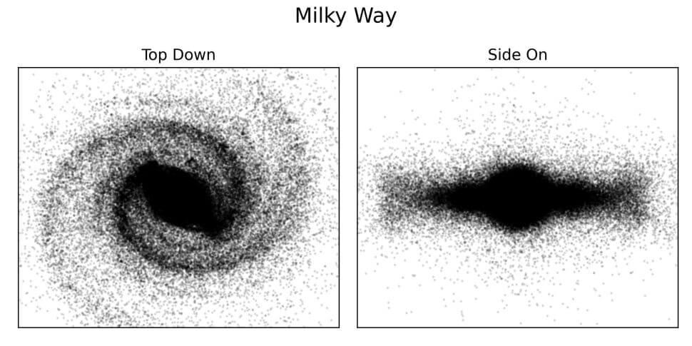
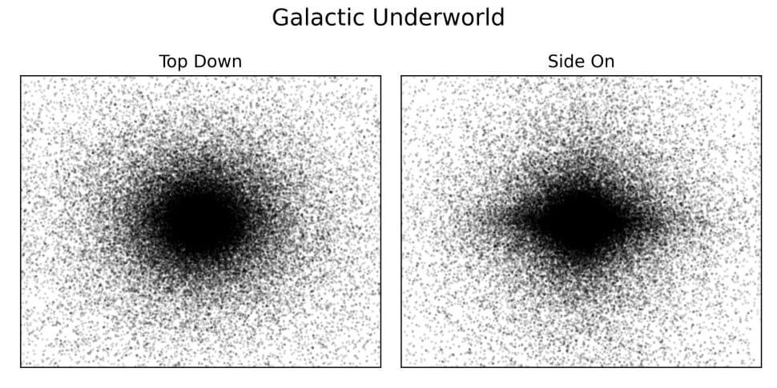
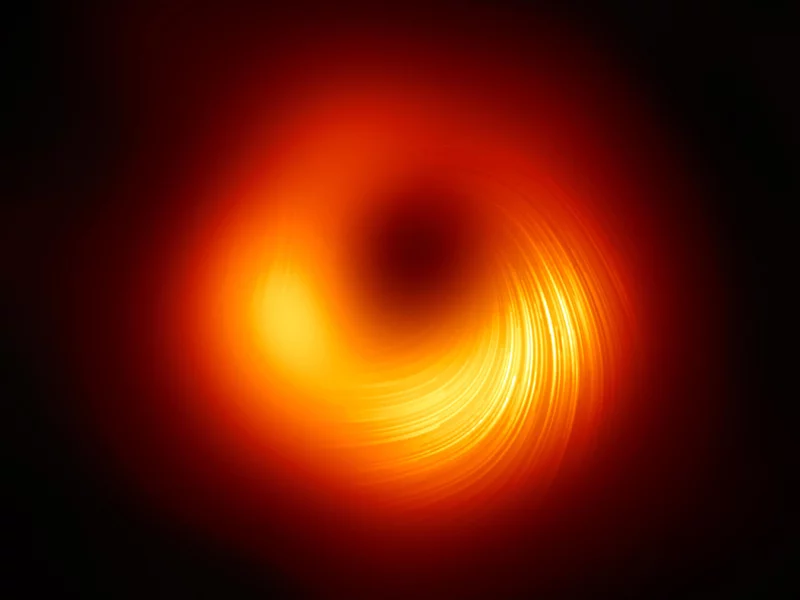
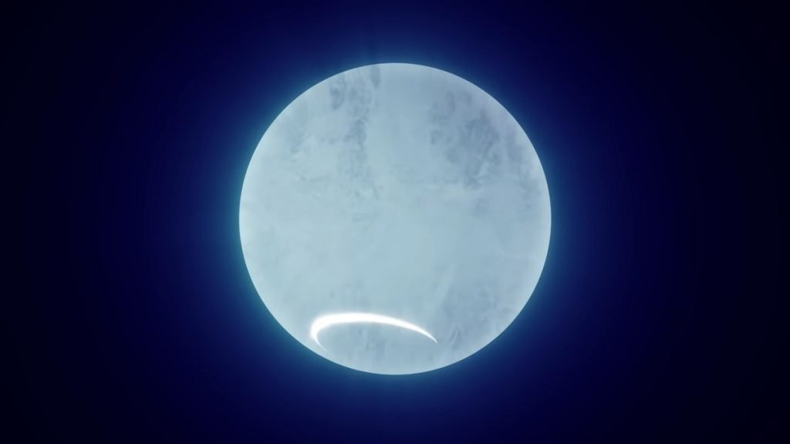

ဒါဆို ဒီ ပေါက်ကွဲ ပျက်စီး သွားတဲ့ ကြယ်သေတွေရဲ့ အကြွင်းအကျန် ရုပ်ကြွင်းတွေ၊ တနည်းအားဖြင့် ဒီ သန်းထောင်ပေါင်း များစွာသော ကြယ်သေတွေရဲ့ ရုပ်ကြွင်းတွေ ရှိတဲ့ ကြယ်သင်္ချိုင်း ကြီးဟာ ဘယ်နေရာမှာ ရှိနေမလဲ။ ဘယ်နေရာမှာ ပုန်းအောင်း နေမလဲ။
ဒီမေးခွန်းရဲ့ အဖြေကို သိရဖို့ သိပ္ပံ ပညာရှင် တွေဟာ ကွန်ပြူတာနဲ့ ဖြစ်စဉ်အတု (computer simulation) တစ်ခုကို ပြုလုပ် ဖန်တီးပြီး အဖြေရှာခဲ့ ကြပါတယ်။ သူတို့ရဲ့ တွေ့ရှိမှု ရလဒ်ကို ဩဂုတ်လ ၂၅ ရက်နေ့ထုတ် Monthly Notices of Royal Astronomical Society သုတေသန ဂျာနယ်မှာ တင်ပြခဲ့ ကြပါတယ်။
ဒီ ကွန်ပြူတာ စင်မြူလေးရှင်း အတွက် သိပ္ပံ ပညာရှင် တွေဟာ ပထမဆုံး မစ်ကီးဝေး အစဦး ပိုင်းက ကြယ်တွေရဲ့ တည်နေရာကို ကွန်ပြူတာထဲ ထည့်သွင်း ခဲ့ကြပါတယ်။ ဒီ့နောက် ဒီ ကြယ်တွေရဲ့ အချိန်နဲ့ အမျှ ဖြစ်ပေါ်လာတဲ့ ဆင့်ကဲ ဖြစ်စဉ် ပြောင်းလဲမှုကို တွက်ချက် ယူခဲ့ ကြပါတယ်။
တနည်းအားဖြင့် ကြယ်တွေရဲ့ မူလ အခြေအနေ ကို အခြေတည်ပြီး နောက် ဘာဆက်ဖြစ်လာသလဲ ဆိုတာကို ကွန်ပြူတာနဲ့ ပုံဖော်ကြည့် ခဲ့ကြတာ ဖြစ်ပါတယ်။
ဒီလို စင်မြူလေးရှင်း လုပ်ကြည့်ပြီး ရရှိလာတဲ့ ကြယ်အကြွင်း အကျန်တွေရဲ့ လက်ရှိ အခြေအနေနဲ့ တည်နေရာကို မြေပုံ ရေးဆွဲခဲ့ ကြပါတယ်။ အထူး သဖြင့် ဒီ ကြယ်သေတွေ ကနေ ဖြစ်ပေါ်လာ ခဲ့တဲ့ black hole တွင်းနက်တွေနဲ့ နျူထရွန် ကြယ် (neutron stars) တွေရဲ့ တည်နေရာကို အဓိက တွက်ချက်ပြီး မြေပုံ ရေးဆွဲခဲ့ ကြတာ ဖြစ်ပါတယ်။

ဒီ သုတေသန အရ မစ်ကီးဝေးရဲ့ ကြယ်သင်္ချိုင်း ကြီးဟာ လက်ရှိ မစ်ကီးဝေး ဂလက်ဆီရဲ့ အမြင့်ထက် ၃ ဆလောက် ပိုမြင့်တယ်လို့ ဆိုပါတယ်။ နောက်ပြီး ကြယ်သေတွေရဲ့ ၃ ပုံ ၁ ပုံလောက်ဟာလဲလက်ရှိ ဆူပါနိုဗာ ပေါက်ကွဲမှု အရှိန်အဟုန်ကြောင့် မစ်ကီးဝေးရဲ့ အဝန်းအဝိုင်း ပြင်ပ အာကာသ ဟင်းလင်းပြင် ထဲကို လွင့်မြော ထွက်ခွာ သွားခဲ့ကြတယ်လို့ ဆိုပါတယ်။
“ဆူပါနိုဗာ ကြယ်ပေါက်ကွဲမှု တွေဟာ ညီညီညာညာ ဝန်းဝန်း ဝိုင်းဝိုင်း ပေါက်ကွဲကြတာ မဟုတ်ပါဘူး။ ဒီတော့ ပေါက်ကွဲမှု အားပိုကောင်းတဲ့ တဖက်ဖက် ကနေ တွန်းကန်လိုက်တဲ့ အားကြောင့် ကျန်ရစ်တဲ့ ကြယ်သေ အပိုင်းအစ တွေဟာ တစ်နာရီကို ကီလိုမီတာ သန်းပေါင်းများစွာသော အမြန်နှုန်းနဲ့ လွင့်စင် ထွက်ကုန် ကြပါတယ်။ ဒီလိုနဲ့ ကြယ်သေတွေရဲ့ ၃၀% လောက်ဟာ မစ်ကီးဝေး အပြင်ဖက် အာကာသ ဟင်းလင်းပြင် ထဲအထိ လွင့်စင် ထွက်ကုန်ကျတာ ဖြစ်ပါတယ်” လို့ ဩစတြေးလျ နိုင်ငံ ဆစ်ဒ်နီ တက္ကသိုလ် (University of Sydney) က သုတေသီ ဒေးဗစ် ဆွီနီ (David Sweeney) က ရှင်းပြပါတယ်။
အခု သုတေသနမှာ သုတေသီ တွေဟာ ကြယ်သေပြီး ဖြစ်ပေါ်လာတဲ့ ရုပ်ကြွင်းတွေ အနက်က အရေးပါတဲ့ ရုပ်ကြွင်း နှစ်မျိုးကို အဓိက လေ့လာ ခဲ့ကြတာ ဖြစ်ပါတယ်။ ဒီ ရုပ်ကြွင်း နှစ်ခုကတော့ ဘလက်ဟိုး တွင်းနက် တွေနဲ့ နျူထရွန် ကြယ်တွေပဲ ဖြစ်ပါတယ်။

ကျွန်တော်တို့ နေထက် ဒြပ်ထု ၈ ဆနဲ့ အထက်ရှိတဲ့ ကြယ်ကြီးတွေ သေဆုံး သွားတဲ့ အခါမှာ နျူထရွန် ကြယ်တွေ ဖြစ်ပေါ် မွေးဖွားလာ ကြပါတယ်။ အကယ်လို့ ဒီ သေဆုံးသွားတဲ့ ကြယ်တွေဟာ နေရဲ့ ဒြပ်ထုထက် ၂၅ ဆ နဲ့ အထက် ပိုကြီးတဲ့ ဧရာမ ကြယ်ကြီးတွေ ဆိုရင်တော့ ဒီကြယ်ကြီးတွေ သေဆုံး သွားကြတဲ့ အခါမှာ black hole တွင်းနက်တွေ အဖြစ် ပြောင်းလဲ မွေးဖွား သွားကြပါတယ်။
နက္ခတ် ပညာရှင် တွေဟာ အခု အချိန် အထိ မစ်ကီးဝေး အတွင်းမှာ တွင်းနက်နဲ့ နျူထရွန် ကြယ် အများအပြားကို ရှာဖွေ တွေ့ရှိ ထားပါတယ်။ ဒါပေမယ့် ကြယ်သေတွေကနေ ဖြစ်လာတဲ့ သန်းထောင်ပေါင်း များစွာသော တွင်းနက် နဲ့ နျူထရွန်ကြယ် အများစု ကိုတော့ အခု အချိန်အထိ ရှာဖွေ တွေ့ရှိခြင်း မရှိ ကြသေးပါဘူး။
ဒီ တွင်းနက်တွေနဲ့ နျူထရွန် ကြယ်တွေကို ရှာဖွေဖို့ ဆိုတာ လက်တွေ့မှာ သိပ်မလွယ် လှပါဘူး။ ပထမ အကြောင်းရင်းက လွန်ခဲ့တဲ့ နှစ်သန်း ၁၃,၀၀၀ ကျော် အတွင်းမှာ မစ်ကီးဝေးရဲ့ ပုံသဏ္ဍာန်ဟာ မမှတ်မိနိုင် လောက်အောင် ပြောင်းလဲ သွားခဲ့ပါတယ်။ တနည်းအားဖြင့် ဒီ ကြယ်သေ သင်္ချိုင်းဟာ သူ့ချည်း သီးသန့် ရှိမနေ တော့ပဲ လက်ရှိ ရှင်သန်နေဆဲ ကြယ်တွေ ကြားထဲမှာ ထွေးရော သွားပါတယ်။

သုတေသီ တွေဟာ အခု စင်မြူလေးရှင်း ပြုလုပ်ရာမှာ ဒီ အချက် တွေကိုပါ ထည့်သွင်း စဉ်းစားပြီး တွက်ချက် ခဲ့ကြတာ ဖြစ်ပါတယ်။ နောက်ပြီး မစ်ကီးဝေး ဂလက်ဆီရဲ့ ပုံသဏ္ဍာန် ပြောင်းလဲမှု ကိုလဲ ထည့်သွင်းပြီး တွက်ချက်ခဲ့ ကြပါတယ်။
ရရှိလာတဲ့ ကြယ်သေ မြေပုံ အရ ကြယ်သေ အများစု ကတော့ မစ်ကီးဝေး ဗဟိုချက်ကို ဗဟိုပြုပြီး ဘောလုံး ပုံသဏ္ဍာန် ဝိုင်းရံ နေကြတာကို တွေ့ရှိခဲ့ ကြပါတယ်။ ဒါကလဲ မစ်ကီးဝေး ဗဟိုမှာ ရှိတဲ့ ဧရာမ မဟာ တွင်းနက်ကြီး (Supermassive black hole) ကြီးရဲ့ ပြင်းထန်တဲ့ ဆွဲငင်အား ကြောင့်လဲ ဖြစ်နိုင်ပါတယ်။
ကျန်ရစ်တဲ ကြယ်သေ အကြွင်းအကျန် တွေကတော့ အာကာသ ဟင်းလင်းပြင် ထဲကို အရပ်မျက်နှာ အနှံ့ လွင့်စင် ပြန့်ကျဲ ထွက်နေတာကို တွေ့ကြရ ပါတယ်။

အခု သုတေသန အရတော့ ဒီ ကြယ်သင်္ချိုင်း အတွင်းက ကြယ်သေတွေရဲ့ ဒြပ်ထု ပမာဏဟာ မစ်ကီးဝေး တခုလုံးရဲ့ ဒြပ်ထု ပမာဏရဲ့ ၁% လောက်ပဲ ရှိတယ်လို့ ဆိုပါတယ်။ ဒါပေမယ့် ဒီ ကြယ်သေ ရုပ်ကြွင်းတွေဟာ ကျွန်တော်တို့ အနီးအနားမှာ အမြဲတမ်း ရှိနေတယ်လို့ ဆိုပါတယ်။ ဥပမာ ကမ္ဘာနဲ့ အနီးဆုံး ကြယ်သေဟာ အလင်းနှစ် ၆၅ ပဲ ကွာဝေးပါတယ်။ စကြာဝဠာ အတိုင်းအတာ နဲ့ဆိုရင်တော့ ဒါဟာ အတော်နီးတယ်လို့ ပြောရမှာ ဖြစ်ပါတယ်။
အခု ကြယ်သင်္ချိုင်း မြေပုံဟာ black hole တွင်းနက်နဲ့ နျူထရွန် ကြယ်တွေ ရှာဖွေနေ ကြတဲ့ သုတေသီ တွေအတွက် အတော် အရေးပါတဲ့ ရလဒ် ဖြစ်တယ်လို့ ဆိုပါတယ်။ ဒီ မြေပုံကနေ တွင်းနက်နဲ့ နျူထရွန် ကြယ်တွေကို ဘယ်နေရာ တွေမှာ ရှာဖွေ ရမလဲ ဆိုတာ ဆုံးဖြတ်ဖို့ အထောက်အကူ ပြုလိမ့်မယ်လို့ ပညာရှင် တွေက မျှော်လင့် ကြပါတယ်။
Ref: A ‘galactic underworld’ of ancient, blown-up stars lurks just beneath the Milky Way’s surface | Live Science